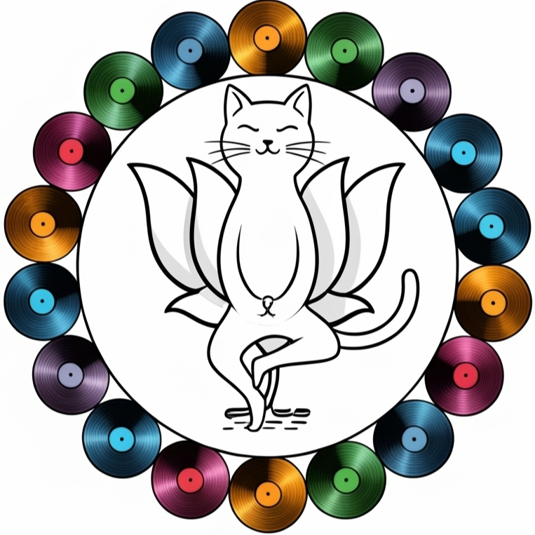

MINISTRY OF AYUSH
ABOUT
DARK MODE
instagram
spotify
Discord
last.fm
Audio Easter Egg
Ministry Initiatives
AYUSH Approved
Bureaucratic Bliss Mix
Pranayam Party
FAQ
Can I cure dengue with cow urine?
How do I contact the minister?
Is this satire?